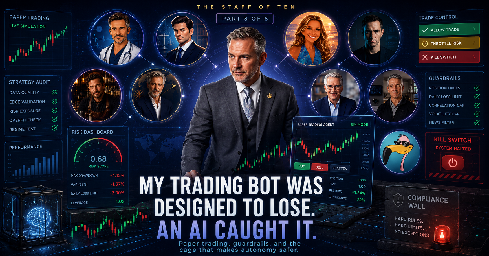

The story behind Fable's name, and the leash I built before letting any agent near real money.

Confession: my first trading agent was named Pierce, and Pierce had a secret.
Important caveat before the story starts: this is paper trading — simulated money, real market data, real order mechanics, zero dollars at risk. The lesson is about guardrails and governance, not investment advice.
Pierce was a paper day-trading bot I'd assembled the way a lot of people assemble their first one - borrowed strategy, plausible-looking rules, decent-looking backtest. He traded busily in simulation. He always seemed almost profitable. And the account drifted down, slowly, day after day.
So I did something that would have been impossible a couple of years ago: I handed the entire codebase to one of the new frontier AI models — Anthropic's Fable, a real, named model, not an in-house nickname — and asked it to audit the strategy like a skeptical quant. The verdict came back brutal and specific: this system is structured to lose money slowly. Not broken. Worse than broken — working as designed. The combination of tiny edges, constant churn, and flattening everything at the end of each day meant costs ate the wins by construction. It was a machine for converting my patience into fees, politely.
Pierce retired that week. The replacement got rebuilt from the ground up as a slower swing trader, and I named it — my agent, not the model — Fable too, after the model that busted its predecessor. From here on, "Fable" in this piece means my trading agent, not Anthropic's model; I'm only borrowing the name, the way you'd name a dog after someone you admired. When an AI catched my bot committing malpractice, I named successor for it's detective work. Pierce keeps a headstone on my dashboard. We honor our fallen.
That audit, by the way, is the single most repeatable trick in this whole series. You don't need to be a quant to ask a frontier model "review this strategy like you're trying to talk me out of it." The capability was always the easy part. What I want to talk about is the harder thing I built next: the leash.
Fable trades a paper account — simulated money, but real market data, real order mechanics, about a hundred grand of play money, zero dollars at risk. That's the foundation, not a footnote. Before Fable touches a real cent, the bar is roughly 150 simulated trades over 8–12 months. A bot that made money in one good month has told me nothing. A bot that behaved sanely across 150 trades and a couple of ugly stretches has told me something. The probation is the point.
Here's what actually makes an autonomous trader safe to own, and it has nothing to do with how smart it is. Fable's judgment is boxed in on every side by rules it cannot argue with — decisions I made once, in code, on a calm day.
Everything above governs individual simulated trades. This one governs the agent itself: if Fable loses more than 4% in a single week, it halts. Not "gets more careful." Halts, hands off the wheel, until the following Monday.
I think this is the most important line in the whole system, because it encodes something true about traders, human and machine alike: a system having a bad week is exactly when it's most dangerous to itself. That's when it revenge-trades, chases, tries to win it back. So Fable isn't allowed to. And neither am I, in the moment — the halt isn't a judgment call made while losing. It was made months ago, on a calm day, by the version of me I trust more.
One more rule, and it's not about money. Certain symbols sit on a hard no-auto-trade list written directly into the engine. Fable can watch those tickers, read news about them, weigh their sectors — but it cannot place an order in them, either direction. One line of code, sitting under a comment that names exactly why it exists.
That line matters more than any simulated profit this system will ever show. An autonomous trader that could touch restricted symbols is not a feature; it is an avoidable liability waiting for a bad coincidence. So it cannot. Not "shouldn't." Not "is discouraged from." Cannot.
Frosty (part 2) escalates every dollar decision to a human. Fable makes them itself. The difference isn't intelligence — it's that Fable's authority ships inside a risk cap, a concentration limit, mechanical exits, a market filter, a kill switch, and a compliance wall. Writing those rules is just governance, in code. It's the same muscle as writing policy at work — which is exactly why building this taught me more about deploying AI responsibly than any vendor deck I've sat through. The cage is what makes autonomy safe. Build the cage first.
Next: the opposite end of the staff — two agents that will
never make or lose me a dollar, and the photo trick that made me
a believer.
Where would you put the hard-coded cage before letting AI act autonomously?